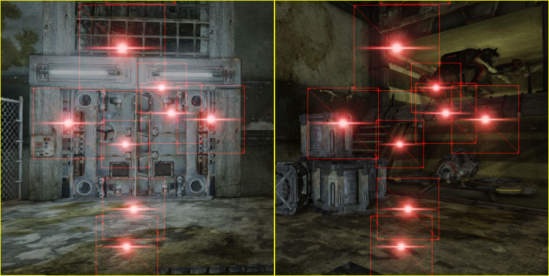
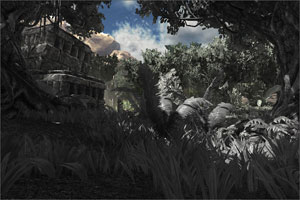

Getting Started: Content Creation
Overview
Without custom content created by the artists, games would surely not be anywhere near as enjoyable to look at and players would find it more difficult to become immersed in the world the game is trying to portray. Using both external applications and the tools provided with Unreal Engine 3, artists have complete freedom to create content that will bring the game environment to life.
Content Import Pipeline
Unreal Engine 3 provides a pipeline for importing geometry including static meshes and skeletal meshes, animations, and morph targets as well as other elements, such as cameras and scenes through Matinee, using Autodesk's FBX file format. The FBX import pipeline means content can be created in virtually any 3D application that supports exporting to FBX files, instead of relying on proprietary exporters or formats.
The FBX pipeline provides a unified workflow for importing geometry and textures, as well as animations and morph targets in the case of Skeletal Meshes, all at once through a unified interface. The process is simple:
- Click the
 button in the Content Browser.
button in the Content Browser.
- Navigate to and select the FBX file containing the content to import.
- In the Import dialog that appears, choose the appropriate settings and click the button. (See FBX Import Properties for complete details on the available options)
- The import process will begin, displaying the progress:
See the FBX Content Pipeline page for complete details about using the FBX pipeline for importing meshes, animations, and morph targets, including explanations of all of the properties and advanced usage.
In addition, for exporting skeletal meshes and animations from external modeling and animation applications, as well as static meshes from applications other than 3dsMax, the ActorX export plugin can be used.
Static Meshes
Static meshes are render meshes, or a collection of related triangles, created in an external modeling application, such as 3dsMax or Maya, and then imported into UnrealEd through the Content Browser.
These meshes can be used for several different types of Actors being placed in a level. Most commonly, a static mesh will be the visual representation of a StaticMeshActor to create world geometry and decorations, an InterpActor to create moving objects, or a KActor to create rigid body physics objects. In reality, any Actor that has a StaticMeshComponent can use a static mesh.
For a guide on creating and importing static meshes, see the FBX Static Mesh Pipeline page.
Static Mesh Editor
Once imported, Static Meshes can be viewed and certain aspects can be modified in the Static Mesh Editor.
This is where global properties of the mesh can be modified, LOD meshes can be imported, UV sets can be managed, and simplified collision geometry can be added or removed.
Collision
Static meshes can have collision calculated against the actual triangles of the render mesh if desired, but generally they use separate simplified collision geometry to reduce the complexity of the collision calculation and improve perofrmance. In the image below, the red and green wireframes show the geometry used for collisions. You can see it is much simpler than the shaded render mesh, but defines the general shape which is usually good enough for collision calculations in most situations.
Simplified collision geometry can be created in an external modeling application and imported along with the render mesh. This allows for completely customized collision geometry. The Static Mesh Editor also contains tools for adding simplified collision geometry to imported meshes. These tools are less flexible, but can work well in certain circumstances.
An overview of collision for static meshes can be found in the Collision Reference.
Level of Detail (LOD)
A level of detail system is built in to allow each StaticMesh asset to render different meshes depending on the size of the mesh on the screen. This can be a great optimization as you can have meshes of varying complexity, each with their own material(s); rendering a detailed mesh up close and switching to meshes with lower detail as the cammera gets farther away and intricate details become unnecessary.
 LOD meshes for a StaticMesh asset can be imported and set up within the Static Mesh Editor.
LOD meshes for a StaticMesh asset can be imported and set up within the Static Mesh Editor.
Skeletal Meshes
Skeletal meshes are meshes weighted to a skeleton, or hierarchy of bones or joints, created in an external modeling/animation application and then imported into UnrealEd through the Content Browser.
These meshes can be animated; or rather animation can be applied to the skeletons of the meshes to animate them. They can also have morph targets applied and their bones can be controlled individually by Skeletal Controllers. These meshes can also have special locators created called Sockets that are attached and/or offset from bones in the skeleton to which items can be attached.
Skeletal Meshes are typically used for characters, weapons, vehicles, and any other items that require complex animations beyond simple translation and rotation.
For a guide on creating and importing skeletal meshes, see the FBX Skeletal Mesh Pipeline page.
Physics Assets
Physics Assets are objects which contain the physical setup for a Skeletal mesh which is used for calculating their physics simulation and collision. They are essentially a collection of rigid bodies joined together by constraints to mimic the shape and desired movement abilities of the Skeletal mesh.
Physics Assets are created and modified in the PhAT physics editor. This is a tool for graphically editing the bodies and constraints that constitute the Physics Asset.
For a guide to using the PhAT editor, see the PhAT User Guide.
Animations
Animations, or animation sequences, are collections of keyframe data that specify the translation and rotation of a single bone at a specific time. Each animation sequence contains all the necessary keyframes for all of the bones in the skeleton for the particular animation. Unreal Engine 3 uses these animation sequences to control the animation of Skeletal Meshes in the game.
A collection of related animation sequences can be grouped into a container called an AnimSet. Usually, all of the animations for a particular Skeletal Mesh or group of Skeletal Meshes sharing a common skeletal setup will be in a single AnimSet.
Animations can be previewed and modified in certain ways within the AnimSet Editor in UnrealEd. For a complete overview of viewing and modifying animations, see the AnimSet Editor User Guide.
For a more detailed overview of the animation system within Unreal Engine 3, visit the Animation Overview page. For a guide to importing animations into Unreal Engine 3, see the FBX Animation Pipeline.
Animation Trees
Unreal Engine 3 uses the idea of 'blend trees', called AnimTrees, to blend together multiple sources of animation data. This method allows you to cleanly organize the way in which a number of animations are blended together, and lets you easily add more animations in predictable ways as you progress. These are typically used for players and other characters to control and blend between the different movement animations.
AnimTrees also provide the ability to use Skeletal Controllers and Morph Targets, which are detailed below. Vehicles also make use of AnimTrees for any animations that may be needed and for visible localized damage through the use of morph targets and direct control of bones through skeletal controllers.
For information on creating and editing AnimTrees, see the AnimTree Editor User Guide.
Skeletal Controllers
Skeletal Controllers, or SkelControls, allow you to modify a bone or set of bones in a skeletal mesh programmatically. For instance, there are skeletal controllers for transforming a single bone arbitrarily, forcing one bone to look at another bone or other location, setting up an IK limb solver, and so on.
SkelControls are set up in the AnimTree Editor and can be connected together to form chains, each affecting a single bone, where each SkelControl is applied to the result of the previous.
For an overview of Skeletal Controllers and using them to manipulate Skeletal Meshes, see the Using Skeletal Controllers page.
Morph Targets
Morph Targets are a way to modify a Skeletal Mesh in real-time, but with more control than bone-based skeletal animation. A static Morph Target is a version of an existing skeletal mesh that has the same underlying geometry in terms of vertices and faces, but the vertices have been positioned differently.
For example, you might create a 'smiling' version for a character in your 3D modeling program, and import that as a 'smile' morph target. Then in the game you can apply this morph target to modify the vertices on the face and make your character smile, but with a great deal of control over how each vertex moves.
Morph targets are also commonly used for creating the appearance of damage on vehicles or other objects.
For more information on Morph Targets and their use, visit the Morph Targets page.
Sockets
Sockets are essentially named locators that can be attached to, and offset from, a bone of a Skeletal Mesh. These provide a simple means of attaching other objects, such as particle effects or other meshes, to Skeletal Meshes in specific locations that can be set up by artists in the AnimSet Editor and referenced by programmers in code.
A detailed overview of sockets can be found on the SkeletalMesh Sockets page.
Materials and Textures
The Materials system in Unreal Engine 3 is an extremely flexible system based on creating materials by linking nodes, called expressions, together to form networks and effects. Each expression evaluates down to a piece of shader code that performs a specific function. These can be chained together with the output of one expression used as the inputs of others. The final result of each expression chain plugs into one of several inputs on the base Material node. The inputs available are:
- Diffuse
- DiffusePower
- Emissive
- Specular
- SpecularPower
- Opacity
- OpacityMask
- Distortion
- TransmissionMask
- TransmissionColor
- Normal
- CustomLighting
- CustomLightingDiffuse
- AnisotropicDirection
- WorldPositionOffset
- Displacement
- TessellationFactors
Materials are created in the Content Browser and modified in the Material Editor. This tool provides a real-time preview of the material and a workspace for creating the netowrks of expressions that make up the material.
A complete reference of every material expression can be found in the Materials Compendium. Various examples of common and useful material creation techniques and effects can be found on the Material Examples page.
Instanced Materials
In Unreal Engine 3, material instancing may be used to change the appearance of a material without incurring an expensive recompilation of the material. General modification of the material cannot be supported without recompilation, so the instances are limited to changing the values of predefined material parameters. The parameters are statically defined in the compiled material by a unique name, type and default value. An instance of a material can dynamically provide new values for these parameters with very little expense.
For details on instanced materials in Unreal Engine 3, visit the Instanced Materials page. For an overview of the Material Instance Editor, see the MaterialInstanceEditorUserGuide.
Material Instance Constant
The MaterialInstanceConstant object allows for users to override the defined parameters set on a material, creating customized instances of a given material. The parameters of the instanced material can be setup by artists to create variations on a theme, modified by level designers using Matinee, or modified by programmers through code during play.
A simple example of using MaterialInstanceConstants to create variation is shown below:
Details on Material Instance Constant assets can be found on the MaterialInstanceConstant page.
Material Instance Time Varying
A Material Instance Time Varying is another type of InstancedMaterial in UE3. Its primary purpose is to put more of the control over how materials change over time into the content team's hands. Usually to have time varying materials you have to have code driving the parameters which we want to avoid.
More information over using time varying material instances can be found on the Material Instance Time Varying page.
Textures
Materials make use of texture images for many different purposes. They can be used simply for their color information to be applied directly to the surface, but they can also be used as masks or for any other purpose where values must vary over the surface of an object. Textures are imported through the Content Browser.
For a guide to creating and importing textures, see the Importing Texture Tutorial. For complete details on the properties of textures in Unreal Engine 3, see the Texture Properties page.
Flipbook Textures
Flipbook textures are special textures which provide the ability to cycle through a series of sub-images, similar to the way particle SubUV animations work in ParticleSystems. However, flipbook textures can be used in materials and applied to any surface in the world. These are a simple way to create limited animations inside of materials without the need for using movie textures (Bink movies).
For information on using flipbook textures, see the Flipbook Textures page.
Render To Texture
The render-to-texture features of the engine allow you to dynamically capture the scene from different viewpoints to a texture resource. This allows for certain special effects such as remote cameras and surfaces that appear to be dynamically reflecting the scene.
For more information on using render textures, see the Render To Texture page.
Particle Systems
A Particle System is a content asset that consists of any number of emitters used to create effects such as fire, explosions, energy beams, etc. Emitters are objects that create, or "emit", particles. Each emitter emits a single type of particle, or TypeData, that all share the same underlying rules for appearance and behavior specified by modules.
Particle systems are created through the Content Browser and constructed using Cascade, the particle editor.
Emitter Types
Unreal Engine 3 provides several different types of emitters which can be mixed and matched within the same ParticleSystem to create any desired effect.
Sprite
A sprite is a single quad. When using the sprite data type, each particle emitted by the emitter will be a sprite with the emitter's material applied. This is the default type of all emitters, so there is no need (nor is it possible) to manually apply this type to an emitter in Cascade.

You can see the underlying geometry of each sprite in the image above. The image also shows that no matter how the camera is positioned, the quads always face towards it.
Sprite emitters are often used to create volumetric effects, such as smoke, fire, dust, etc., as well as other things like sparks, weather effects (rain, snow), flares, and many more.
Mesh
Emitters using the mesh data type emit particles that render a StaticMesh instead of the default sprite. Mesh emitters are commonly used to create debris from explosions or destruction, such as rock chunks, vehicle parts, or splintered pieces of wood, in addition to other effects that require the three-dimensionality provided by the use of StaticMeshes.
AnimTrail
The AnimTrail data type causes multiple particles, with quads extending between them connected end-to-end, to be emitted to form a trail in response to the animation of a SkeletalMesh. These can be used to enhance the appearance of motion due to animations, such as a streak from a slashing sword.
See the AnimTrails page for more information on creating and using AnimTrail emitters.
Beam
Beam emitters emit multiple particles, with quads extending between them connected end-to-end, between a source and target location to form a beam. These emitters can be used to create lasers or other beam-type effects.
Ribbon
The ribbon data type emits particles where each particle is connected to the previous one, with quads extending between them connected end-to-end, to form a ribbon-type effect. Ribbon emitters can be used to create more generic or arbitrary trails (as opposed to the animation driven AnimTrails mentioned previously).
PhysX
The PhysX data types emit either sprites or meshes in a similar manner to the standard Sprite or Mesh data types, but the particles are controlled by a fluid physics simulation.
Modules
The appearance and behavior of the particles are controlled by a collection of modules. Each module controls a specific aspect determining how a particle looks or behaves.
Examples of what can be controlled through modules include:
- How long each particle lives
- Where particles are spawned from
- Direction and speed particles move
- How large are the particles
- The Color of the particles
- Direction and speed particles rotate
- Whether particles collide with geometry
For a thorough reference of particle systems and the various modules available for use in them, see the Particle System Reference.
Post Process Effects
Post Process Effects are used in Unreal Engine 3 to apply full-screen effects, such as bloom, depth of field, motion blur, etc., to the rendered scene. These effects are created by chaining together different modules, each of which performs a specific effect (though some modules combine multiple effects for performance efficiency).
Post process effects are created in the Content Browser and edited in the Post Process Editor.
This node-based editor allows the various available effect modules to be added and arranged
For additional information over specific types of effects available in Unreal Engine 3, see the following pages:
Bloom
Bloom is a type of glow effect that occurs when looking at very bright objects that are on a much darker background.
This effect is created by simulating the effects that happen in the eye (retina subsurface scattering), when light hits the film (film subsurface scattering), or in front of the the camera (milky glass filter). This effect is available as part of the UberPostProcessEffect module.
Blur
The Blur Effect is a simple Guassian blur applied uniformly to the full-resolution scene.
| | |
| Without Blur Effect | With Blur Effect (BlurKernel = 2) |
Depth of Field (DOF)
Depth of field simulates the falloff of sharpness from the focus of the camera. This effect - where certain objects are in focus or sharp while other objects, nearer or farther, are out of focus or blurred - should be familiar as it is common in film and photography. This effect is available as part of the UberPostProcessEffect module.
| | |
| Without DoF Effect | With Dof Effect |
Material Effects
Material Effects allow you to use the Material System and all of its flexibility and extensibility to sample, modify, and manipulate the rendered scene within the Post Process Chain. The material system provides access to both the scene texture and scene depth to be used along with all of the standard material expressions. This allows for any number of completely custom effects to be created, and multiple material effects can be applied within the same post process chain.
| |  | |
| Scene Depth Visualized | Distance-Based Desaturation | Sepia Tone Scene Tinting |
Motion Blur
Motion Blur is an effect seen in still images and movies where fast moving objects appear blurred because the camera's shutter is open for a short period of time to enable enough light to reach the film media. Motion blur is also perceived in the human eye because the sensors in the human eye retain gathered light over time causing the perceived image to fade over time.
| | |
| Without Motion Blur | With Motion Blur
(and quick camera movement) |
Ambient Occlusion
The Ambient Occlusion post process effect attempts to simulate the attenuation of light due to occlusion. This effect is a screen-space effect calculated using the scene depth to determine occlusion. This means the effect is not affected by the complexity of the scene and allows the effect to be calculated in real-time, but quality is sacrificed over standard ambient occlusion methods.
| | | |
| Without Ambient Occlusion | With Ambient Occlusion | Ambient Occlusion Only |
Anti-Aliasing
Anti-Aliasing is used to reduce the stair step like appearance of edges that are near vertical or horizontal, or aliasing, inherent to computer generated images. This effect is available as part of the UberPostProcessEffect module.
Color Grading
Color Grading in Unreal Engine 3 includes both tone mapping - which maps the wide range of HDR (high dynamic range) colors into the small LDR (low dynamic range) so a monitor can display the color - and color correction - the transformation of LDR color to screen color through the use of lookup tables. This combination provides extremely flexible and fine-grained control over the color of the final rendered scene.

Audio and Sound
Audio playback in UE3 is handled by a collection of sound actors, through Kismet, or through code. For an overview of the audio system in Unreal Engine 3, see the Audio System page.
Sound Waves
Sound waves are the base asset that contain the actual sound wave data to be played. These are imported through the Content Browser.
SoundCues
The behavior of the sounds being played is defined within SoundCues. SoundCues are objects that allow for chaining together nodes which perform some operation on a sound wave or define some aspect of the sound's behavior. Most of the engine relies on SoundCues to play sounds instead of the basic sound waves.
For more information on creating and editing SoundCues, see the SoundCue Editor User Guide.
Sound Actors
Sound Actors can be placed into levels to create environmental and ambient sounds. There are several different sound actors provided with Unreal Engine 3. Some act on sound waves directly while others require SoundCues.
Important!
You are viewing documentation for the Unreal Development Kit (UDK).
If you are looking for the Unreal Engine 4 documentation, please visit the Unreal Engine 4 Documentation site.